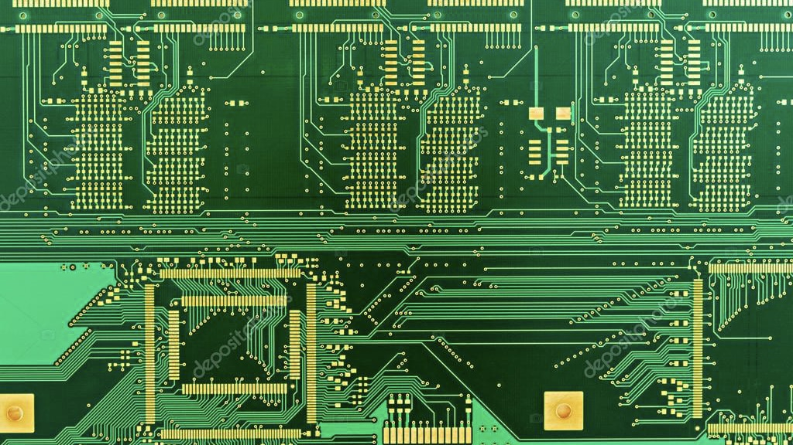
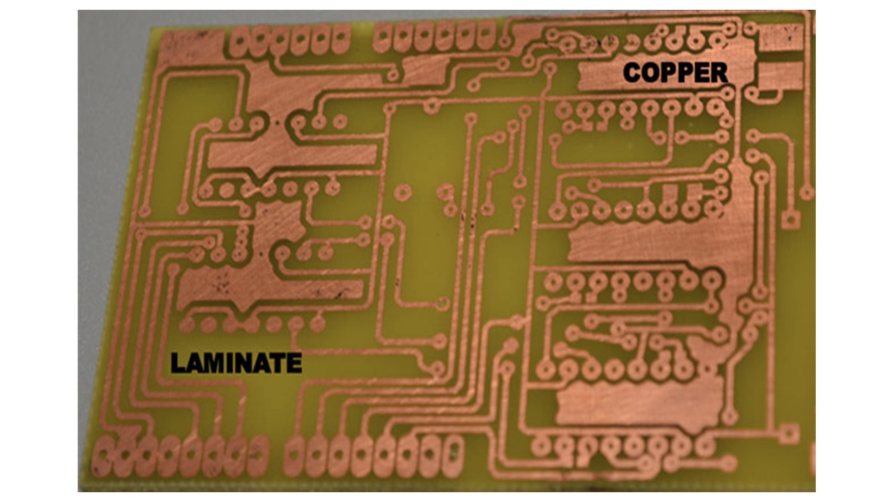
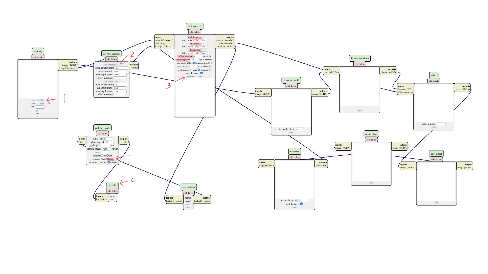
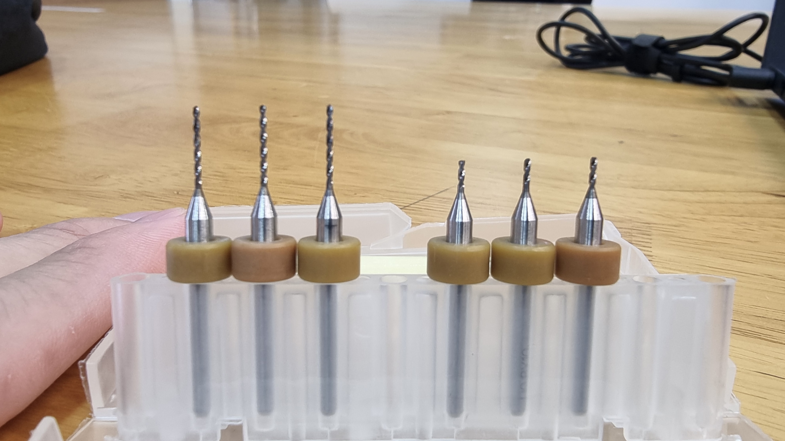
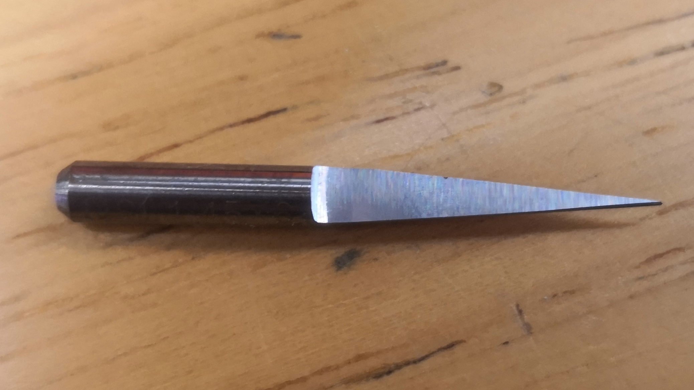
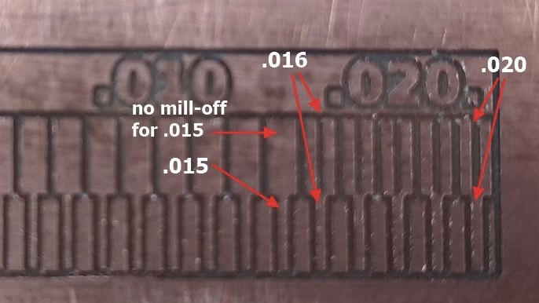
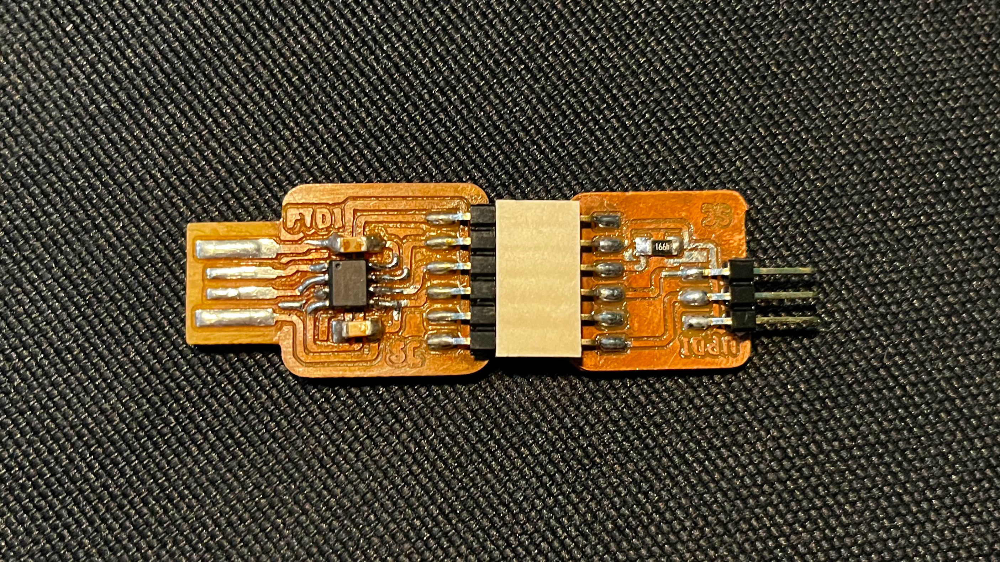
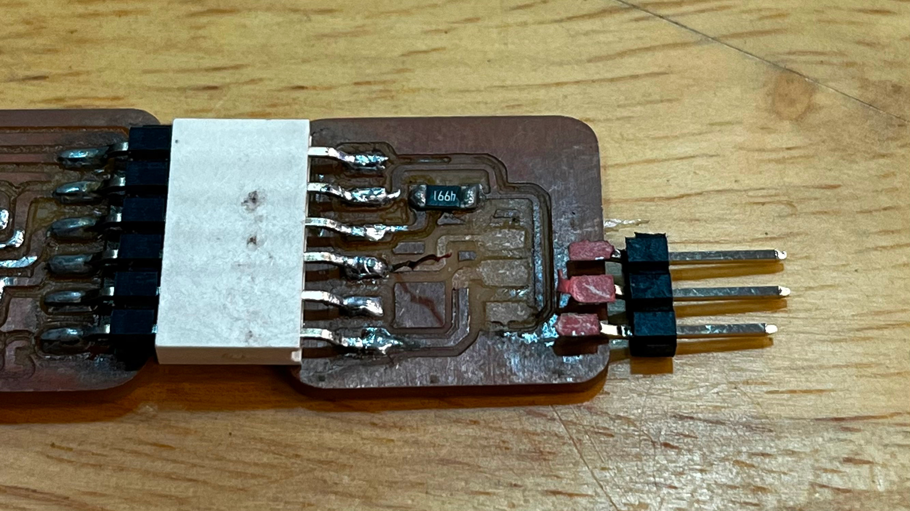

Fabricating PCBs
A printed circuit board (PCB; also printed wiring board or PWB) is a medium used in electrical and electronic engineering to connect electronic components to one another in a controlled manner. It takes the form of a laminated sandwich structure of conductive and insulating layers: each of the conductive layers is designed with an artwork pattern of traces, planes and other features (similar to wires on a flat surface) etched from one or more sheet layers of copper laminated onto and/or between sheet layers of a non-conductive substrate.
|  |  |
Why make PCBs?
Producing your own electronics allows you to customise it to meet product requirements and the footprint for the product. It also improves reliability while improving product integration and ability to prototype with faster iterations.
Assignments
- Group assignment:
- To characterise the design rules for our PCB production process, i.e. what is the useable minimum tracewidth for our PCB production process?
- Individual assignment:
- To make an in-circuit programmer by milling and stuffing the PCB.
- Test it.
I will be using the StepCraft CNC Machine to mill out my PCBs.

Characterising design rules
The first step is to prepare the raw test file which can be downloaded here. The numbers shown are in inches with the smallest width being 0.001" (aprox. 0.025mm). We will need to turn the png image into a ns file which is the machine readable gcode format. This can be done by importing the image into the mod website via the following steps:
{kind=link}
- Right click and select programs
- open server program
- Under G-code select mill 2D PCB png
It should look something like this:
With reference to the image above:
- Import the png image via the select png file mod and ensure dpi is at least 1000.
- Adjust the tool diameter, cut depth, max depth, offset number and offset stepover accordingly. This is done by selecting either mill traces or mill outline and for this example, we will be using mill traces.
- Press calculate to generate the traces.
- Lastly, before saving the file, ensure mm format is selected.
Before milling, it is good practice to perform simuation check to ensure everything runs accordingly. For this, ncviewer can be used. The steps are as follow:
- Import the ns file into ncviewer by selecting open file.
- To run the simulation, the start button is found at the bottom center of the screen.
After running the simulation, the next step is to prepare the CNC machine. In general, there are 2 types of drill bits; flat and angled. The flat is used primarily for milling out the outline whereas the angled is used mainly to mill out the traces of the PCB. It is also important to note that milling out the traces should come before milling out the outline.
| Flat | Angled |
|  |  |
With some doule sided tape and a pen knife, we can secure the copper board onto the sacrificial board. We can then secure the drill bit onto the machine using a wrench and we can then set up the UCCNC software used by StepCraft. After initialisation is completed, the required g-code file is loaded into the software. The next step is to set the drill position to the desired position (indicated by the yellow dot on the screen). The X and Y positions are set by moving the drill to the desired starting point followed by clicking the X and Y zero buttons. For the Z-direction, the touch sensor probe is used. The diagnostic tab is first activated to check if the probe is connected and operating properly before the calibration in the z-direction is carried out. Once everything is set, the drill is switch on and the milling operation is started by clicking on the "Cycle Start" button twice.
Going from right to left, the air-gap and the trace were both visible and well defined from 0.02 inches to 0.016 inches. For 0.015 inch, the trace was nicely cut but the air-gap is completely missing. The limit of the CNC machine using 0.4 mm flat end drill bit is hence 0.016 inches or 0.4064 mm, which is the same as the diameter of the drilling bit.
Making an in-circuit programmer
With the skills learned and picked up from the group assignment, we will now proceed with making 2 boards (FTDI and UPDI) so as to allow an in-circuit programmer to interact with a computer to be programmed. The trace and outline used can be found here:
{kind=link}
{kind=link}
{kind=link}
{kind=link}
{kind=link}
{kind=link}
Important to note that mill outline is selected in step 2 for the FTDI/UPDI outline. The cleaning up and preparation process of the PCB for soldering will be explored further in Electronics Design. For now, we will first cover on the soldering. Soldering on the PCB is done using Surface-mount Technology (SMT) where the components are attached and connected to the surface. Having a soldering station with a micoscope will help significantly with the soldering process. To solder SMT components, it is advisable to first lay some solder on one tab of the PCB which will be attached first to one of the legs. After you have finished soldering both the FTDI and UPDI board, it should look something like this:
Noted you should have a thin plastic board stuck to the back of your FTDI board so it will have a secure fit in the USB port. Additionally, I learned the hard way that the copper PCB can be fragile if you are not careful.
